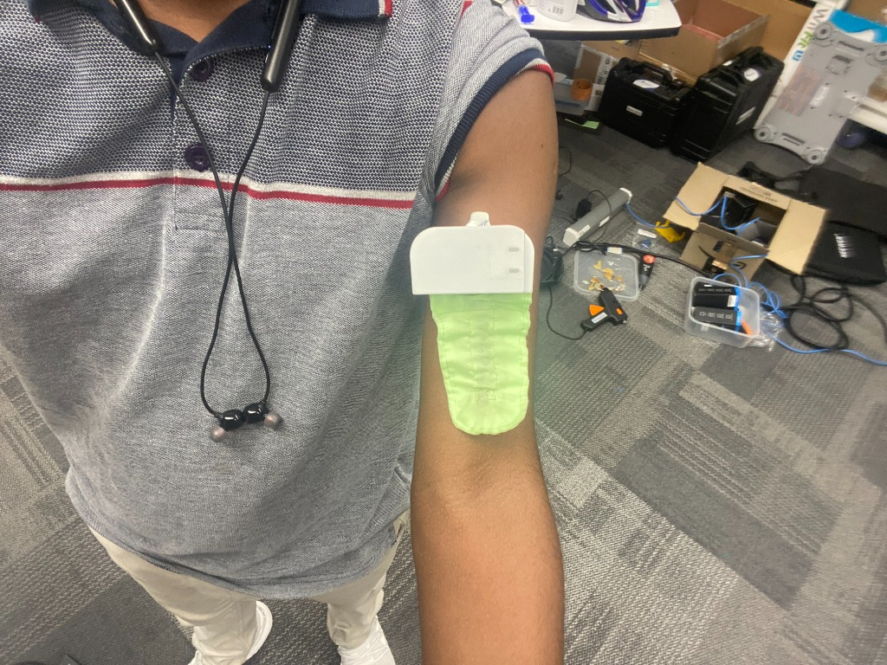
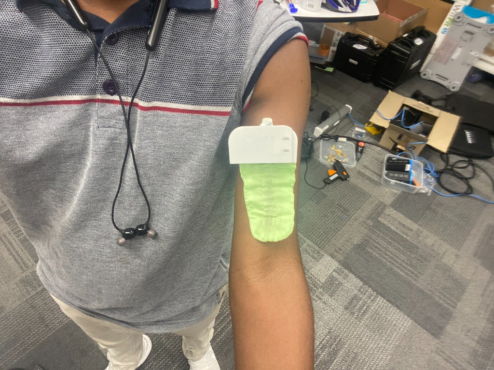
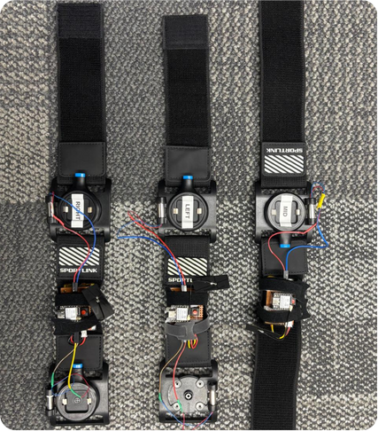
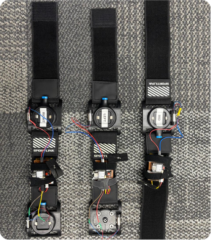

Experience
I am a former Research Intern at the award winning Exertion Games Lab at Monash University, working under the supervision of Dr. Don Samitha Elvitigala and Prof. Florian 'Floyd' Mueller. My tenure focused on developing novel wearable systems, notably 'VibroBits,' a vibrotactile feedback system for sports training demonstrated at SportsHCI ’25, for which I was the first author.
Beyond my primary research, I provided technical engineering for several PhD initiatives: I developed a gaze aversion detection system using Tobii Eye-Trackers and embedded modules for Nathalie Overdevest's 'Embodied Remembering' project, and prototyped wireless olfactory and thermal devices for Poyao 'Cosmos' Wang’s lucid dream induction study. Additionally, I designed AR navigation systems using HoloLens 2 for Linjia He’s research on cyclist attention, while also assisting in the associated systematic review. Throughout the internship, I executed full-cycle research workflows from gap analysis to manuscript revision and actively engaged in the lab’s scholarly culture.
 

 
